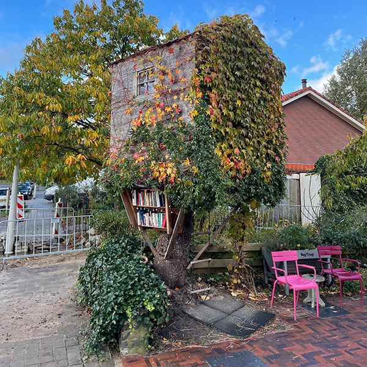
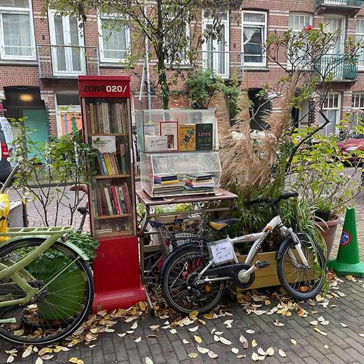

Welkom op mijn pagina over de lokale buurt biebliotheekjes van Amsterdam. Op deze pagina ga ik jullie meenemen langs een aantal van de mooiste en leukste buurt biebjes van Amsterdam!
Druk op een van deze twee boeken om de volgoorde van biebjes te bepalen!
Kijk voor de link naar de pagina's bij de alfabetische volgoorde

#1 De Telefooncel
Boomstraat 67

#2 De Boom Hut
Pasteurstraat 11 in de Middenmeer

#3 De BoekenBoom
Pieter van der Doesstraat 7

#4 De Boot
Meeuwenlaan 21 in Noord

#5 De Woonwagen
Twentestraat 12 in de Rijnbuurt

#6 Sterrenkijker
Sumatrakade 1155 op het Ijland

#7 Het Aquarium
Elisabeth Wolffstraat 82 in de Chassébuurt

#8 Citroenboom
Blasiusstraat 4 Tussen zuid en oost